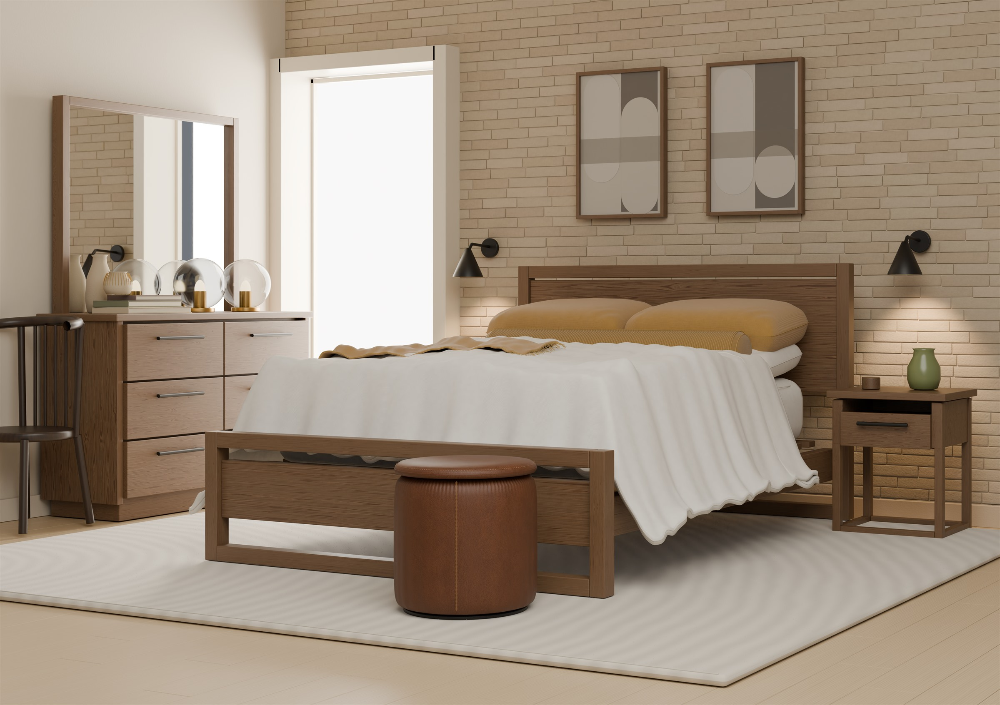
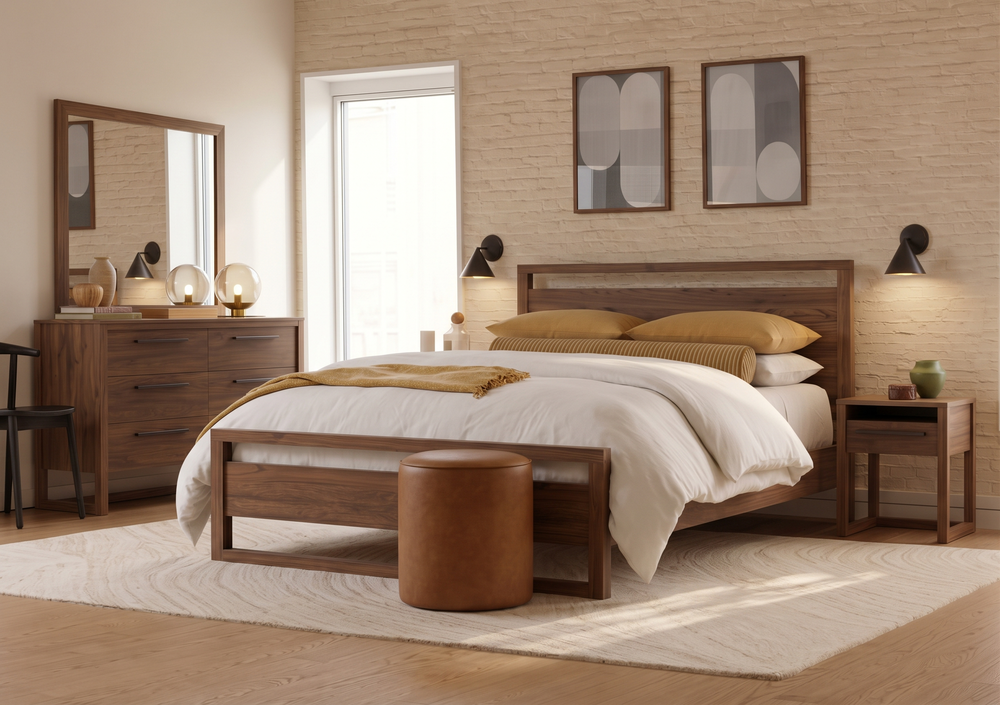

INTERIOR STUDY / 01
Ruang
untuk
pulang.
Serat walnut yang hangat. Lipatan katun yang lembut. Sebuah ruang yang terasa nyata, hingga detail terkecilnya.
Jelajahi ruang WALNUT BEDROOM 2026

01 — THE FEELING
Karakter datang
dari material.
Serat walnut, tenunan katun, dan pori kulit cognac. Buka setiap detail untuk melihat potongan langsung dari render 8K.
Natural cotton
Woven threads / soft foldsOchre
Linen weave / corduroyCognac leather
Fine pores / saddle stitchDetail dari model yang sama, bukan gambar tekstur pengganti. 7680 × 5416 px · Native Cycles render
02 — A DIFFERENT PERSPECTIVE
Lihat dari sudutmu.
Putar ruang, dekati detailnya,
dan temukan sudut favoritmu.
Putar · Perbesar · Jelajahi
Model 3D belum dapat ditampilkan di browser ini.
Unduh model GLB ↗ MODEL INTERAKTIF
Geser untuk memutar · Scroll atau cubit untuk memperbesar
01 / 03Model web dengan tekstur PBR yang dipanggang dan geometri terkompresi. Render 8K menampilkan pencahayaan ray-traced serta detail penuh dari proyek Blender.
03 — FROM IDEA TO SPACE
Dari referensi,
menjadi ruang.
Geser pembatas untuk membandingkan arah visual dengan model yang dibangun. Satu ide, dua cara melihatnya.

RENDER REVISIREFERENSI04 — MAKE IT YOURS
Lanjutkan
ceritanya.
Semua dimulai dari sebuah ruang.
Buka modelnya dan jadikan bagian dari idemu.